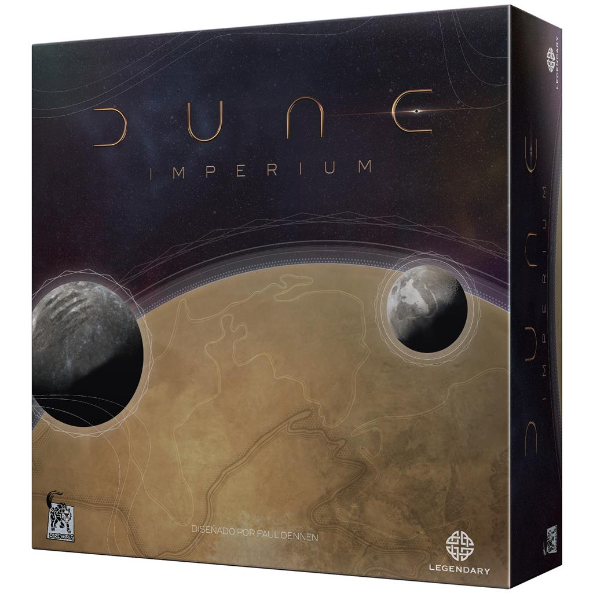

Dune Imperium
"Dune Imperium" es un juego de tablero, de 2 a 4 participantes, en el que tus decisiones serán las que determinen el futuro del imperio.
"Dune Imperium" es un juego de tablero, de 2 a 4 participantes, en el que tus decisiones serán las que determinen el futuro del imperio.
"Nucleum" es un juego de tablero, de 1 a 4 participantes, en el que, gracias al reactor nuclear Nucleum, podrás conectar tus ciudades y energizar tus edificios.